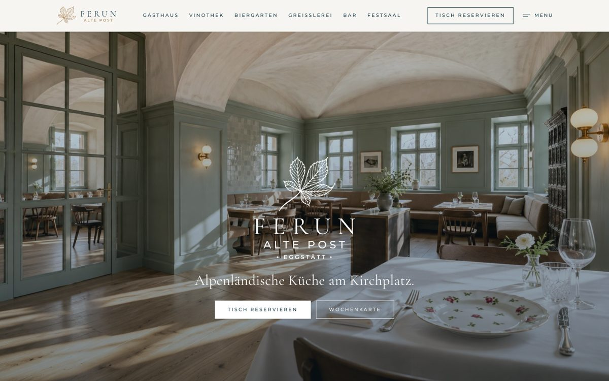
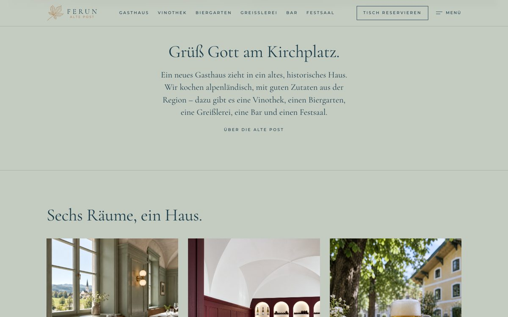
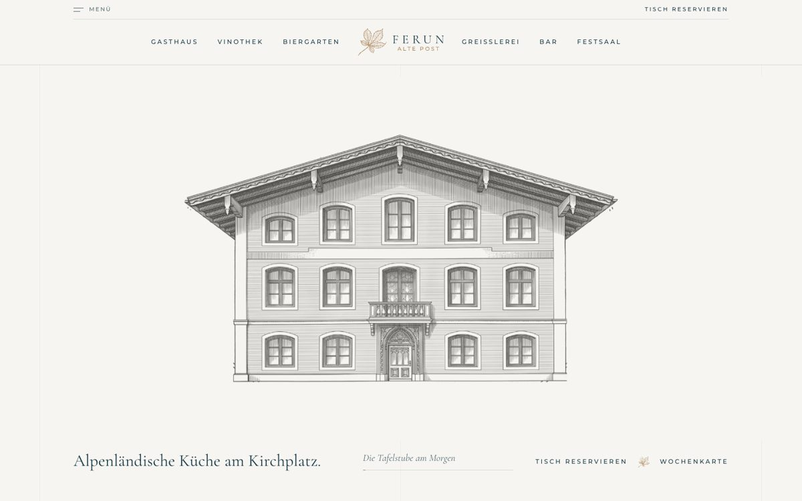

Variante 1KlarHell, ruhig, zeitlos.Papierweiß als Grund, ein großes Foto zum Einstieg, dazu Navy und Kupfer aus dem Logo. Die klassische Variante: Räume, Bilder und Essen stehen im Vordergrund.Ansehen
Variante 2SalbeiDie Hausfarbe als Grundton.Die ganze Seite liegt im Salbeigrün der Stuben. Wärmer und wohnlicher, sofort als FERUN erkennbar. Aufbau wie bei Klar.Ansehen
Variante 3LinieWie ein Bildband.Zum Einstieg zeichnet sich das Haus Strich für Strich, dann öffnet sich das große Bild. Logo in der Mitte, Räume als Verzeichnis, feine Linien und viel Platz für große Bilder. Die kunstvollste Variante.Ansehen